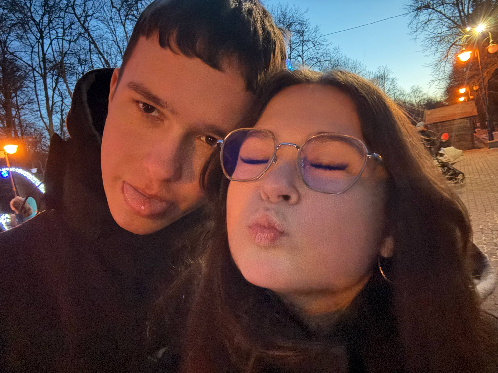

З Днем Святого Валентина! ❤️
Ти — найпрекрасніше, що сталося в моєму житті.
Натисни на кнопку, щоб дізнатися секрет.
Натисни мене
Я тебе дуже сильно кохаю! ❤️
Давай сьогодні зробимо цей вечір особливим?